بيئة التعلم المدمج لتنمية مهارات إنتاج الدروس التفاعلية لدى طلاب كلية التربية النوعية
أعزائي طلاب الفرقة الثالثة شعبة الحاسب الآلي، أهلًا ومرحبًا بكم في البيئة التعليمية لتنمية مهارات إنتاج الدروس التفاعلية. يرشدك هذا الدليل خطوة بخطوة: كيف تدخل إلى البيئة، ثم كيف تتعامل مع كل رابط فيها حتى تنهي دراستك، فاقرأه بعناية حتى تتقدم في دراستك دون أن تحتاج لسؤال أحد.
🏫 في البيئة الصفية (المحاضرات)تدرس الموديول الأول (خلفية نظرية عن الدروس التفاعلية) والموديول الثاني (نموذج التصميم التعليمي لتصميم الدروس التفاعلية).
💻 في البيئة الإلكترونية (هذه البيئة)تدرس الجانب العملي: الموديول الثالث (مرحلة إنتاج الدروس التفاعلية باستخدام برنامج CourseLab) والموديول الرابع (مرحلة نشر وتطبيق وتقويم الدروس التفاعلية).
🔑 للدخول على الموديول الثالث (البيئة التعليمية) يجب أن تقوم بالإجابة على الاختبارات، سواء الاختبار التحصيلي القبلي أو اختبار أساليب التعلم، وبناءً على درجتك فيهما سيتم توجيهك للبيئة المناسبة.
📌 الدليل متاح في كل وقت من رابط «📘 دليل المتعلم» أعلى الشاشة، ويمكنك فتحه حتى أثناء الاختبارات (يفتح في نافذة جديدة).
جهاز كمبيوتر أو لابتوب (يُفضّل لتطبيق برنامج CourseLab عمليًا)، أو تابلت بشاشة لا تقل عن 10 بوصة.
متصفح إنترنت بإصدار حديث: Google Chrome (موصى به) أو Microsoft Edge أو Firefox.
اتصال مستمر بالإنترنت لمشاهدة الفيديوهات وحفظ إجاباتك دون انقطاع.
سماعات لمتابعة شرح الفيديوهات، ودفتر لتدوين النقاط المهمة.
🔍 إذا ظهر شريط تمرير أو جزء مقصوص من الصفحة: صغّر تكبير المتصفح بالضغط على Ctrl و − حتى تظهر الصفحة كاملة، وللرجوع للحجم الطبيعي Ctrl و 0.
افتح متصفح الإنترنت (مثل Google Chrome).
انسخ رابط البيئة التالي والصقه في شريط العنوان: ثم اضغط Enter.
تظهر الشاشة الرئيسية للبيئة كما هو موضح بالشكل الآتي:
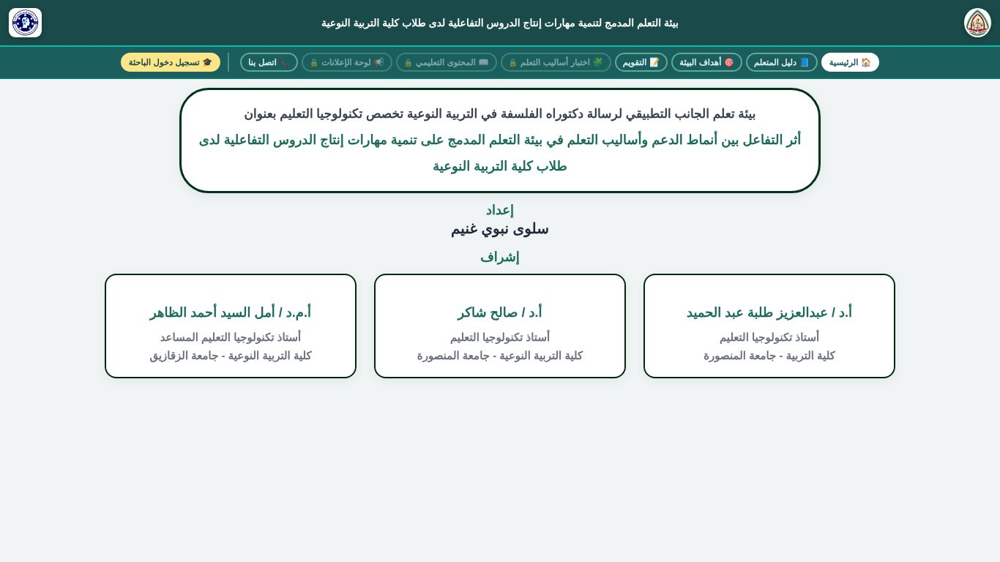
الشاشة الرئيسية للبيئة
📝 قم بأداء الاختبار التحصيلي القبلي واختبار أساليب التعلم، وبناءً على درجتك فيهما سوف يتم توجيهك للبيئة المناسبة لتلقي الدعم، وتدخل إليها من خلال اسم المستخدم (اليوزر نيم) وكلمة المرور كما بالشكل الآتي:
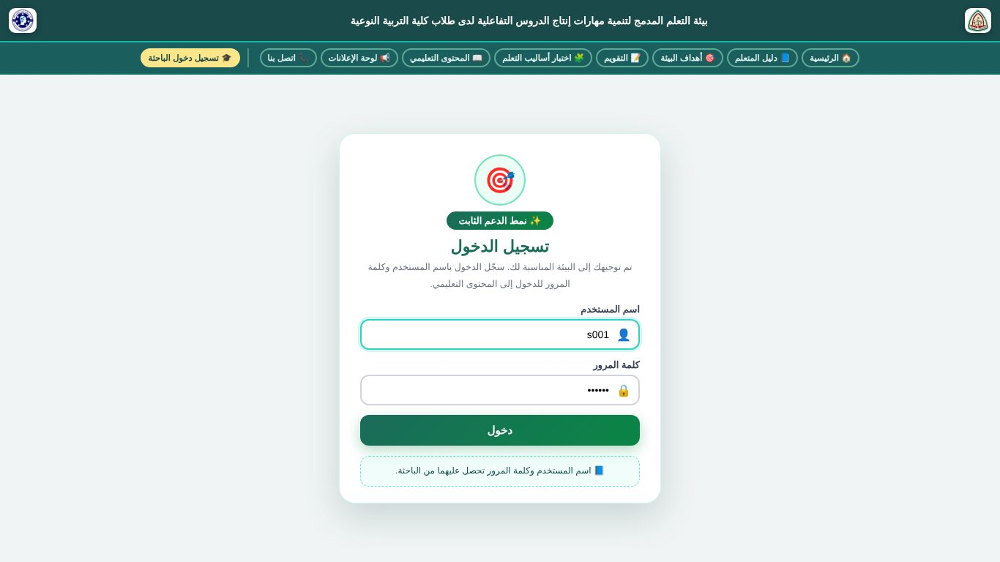
شاشة تسجيل الدخول لبيئة الدعم التي تم توجيهك إليها
🔐 اسم المستخدم وكلمة المرور تحصل عليهما من الباحثة، وهي بيانات شخصية لا تشاركها مع أحد. بعد دخولك لبيئة الدعم يُحفظ كل ما تنجزه باسمك، وعند الدخول مرة أخرى (من أي جهاز) تكمل من حيث توقفت.
تتنقل داخل البيئة من خلال الروابط أعلى الشاشة، وهي ظاهرة لك من لحظة الدخول حتى الخروج. الرابط الذي بجواره 🔒 لم يحن دوره بعد؛ اضغط عليه لتعرف ما الخطوة المطلوبة قبله.
الرابط
ماذا يحدث عند الضغط عليه؟
🏠 الرئيسية
يعرض عنوان البحث وبيانات الباحثة والسادة المشرفين.
📘 دليل المتعلم
هذا الدليل، ويتضمن كل تعليمات التعامل مع البيئة من الدخول حتى الخروج.
🎯 أهداف البيئة
يعرض الأهداف التي ستكون قادرًا على تحقيقها بعد دراستك في البيئة.
📝 التقويم
منه تؤدي الاختبار التحصيلي القبلي واختبار أساليب التعلم، وفي نهاية التعلم الاختبار التحصيلي البعدي.
🧩 اختبار أساليب التعلم
رابط مباشر لاختبار أساليب التعلم (يُفتح بعد الاختبار القبلي).
📖 المحتوى التعليمي
الموديول الثالث والرابع؛ يُفتح بعد الاختبارين وتسجيل الدخول لبيئتك.
📢 لوحة الإعلانات
آخر الأخبار والتعليمات والمواعيد المهمة.
📞 اتصل بنا
التواصل مع الباحثة عبر واتساب أو البريد الإلكتروني.
🚪 تسجيل خروج
الخروج من البيئة مع حفظ تقدّمك.
قبل دراسة الموديول الثالث يجب أن تجيب عن اختبارين بالترتيب. للإجابة على التقويم اضغط على رابط «📝 التقويم» واختر منه:
اضغط على بطاقة «الاختبار التحصيلي القبلي» فتظهر تعليمات الاختبار (160 سؤالًا في 90 دقيقة، ويُؤدّى مرة واحدة فقط).
اقرأ التعليمات ثم اضغط «قرأت التعليمات»، واكتب اسمك، وأجب عن الأسئلة، ثم اضغط «إنهاء الاختبار».
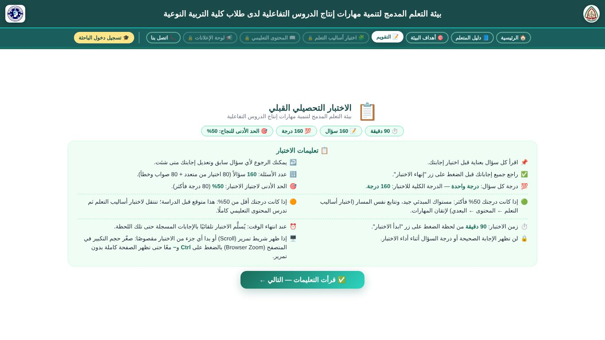
تعليمات الاختبار التحصيلي القبلي
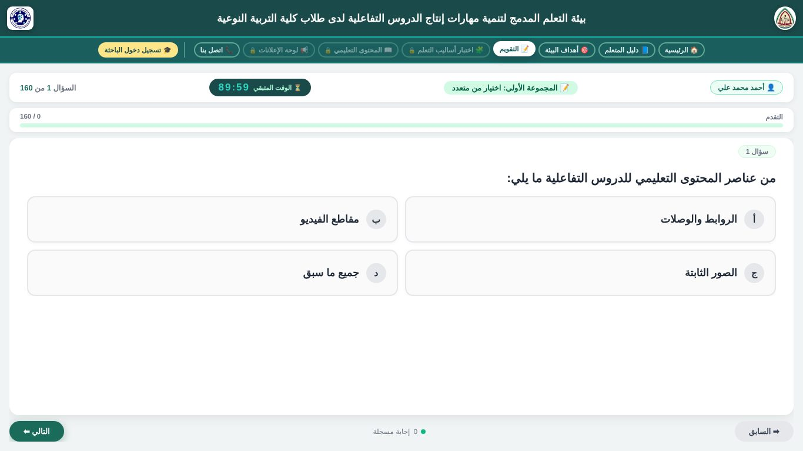
شاشة الأسئلة: الوقت المتبقي أعلى الشاشة، وخريطة الأسئلة للتنقل
تظهر نتيجتك، ومعها رابط «اضغط هنا للانتقال مباشرة إلى اختبار أساليب التعلم» — اضغط عليه.
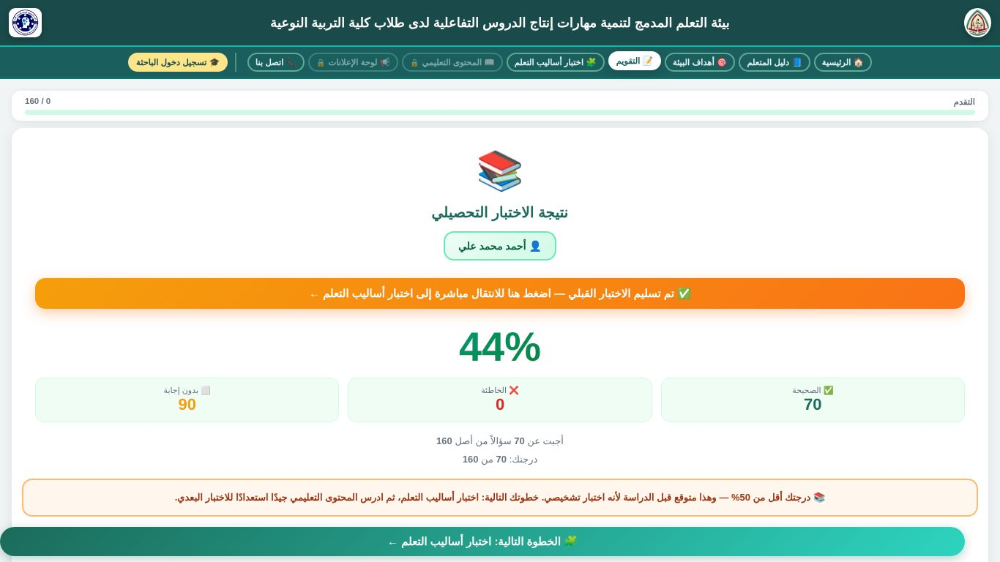
نتيجة الاختبار القبلي ورابط الانتقال لاختبار أساليب التعلم
٢) اختبار أساليب التعلم
يُفتح من الرابط السابق، أو من بطاقة «اختبار أساليب التعلم» داخل «التقويم». تبحث فيه عن شكل بسيط مخفي داخل شكل معقد وترسم حدوده بالماوس: قسم تدريبي (7 أشكال في دقيقتين) ثم قسمان (9 أشكال في 5 دقائق لكل منهما).
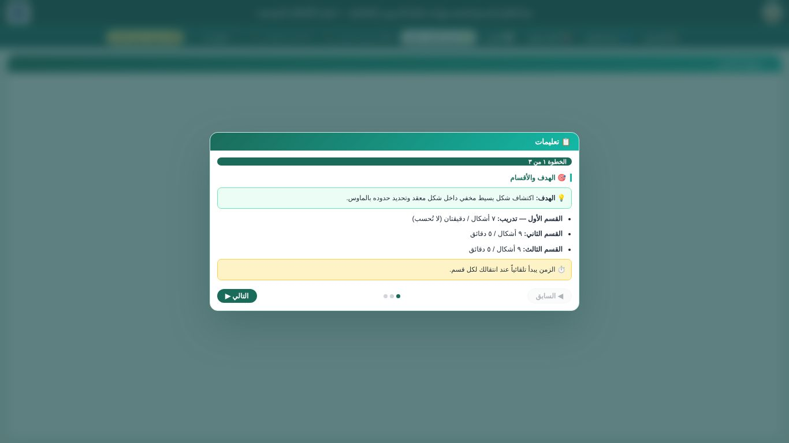
تعليمات اختبار أساليب التعلم
بناءً على درجتك في الاختبار يتم توجيهك تلقائيًا للبيئة المناسبة لك (نمط الدعم الثابت أو المرن).
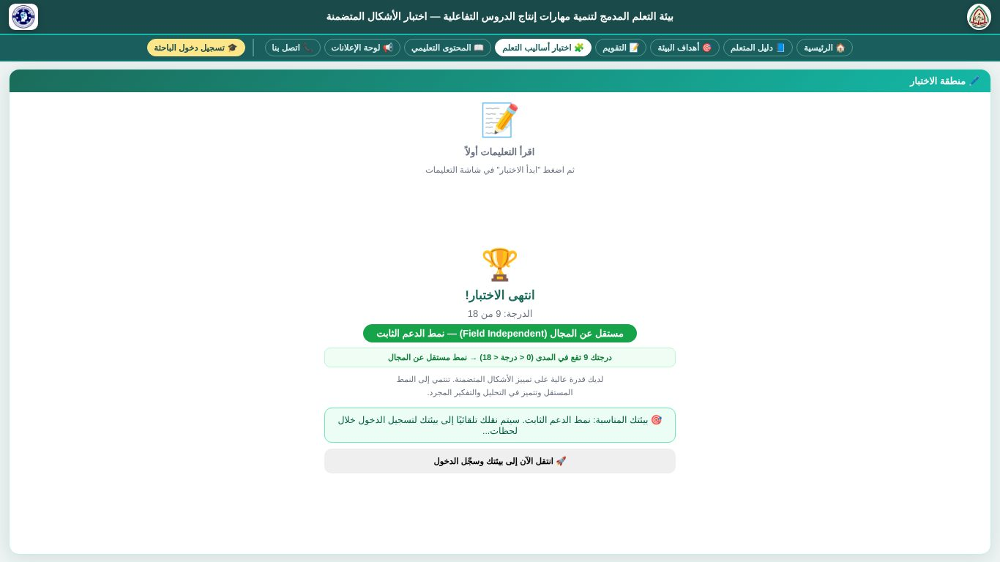
نتيجة اختبار أساليب التعلم والتوجيه لنمط الدعم المناسب
٣) تسجيل الدخول للبيئة المناسبة لك
بعد التوجيه تظهر لك شاشة تسجيل الدخول الخاصة ببيئتك؛ اكتب اسم المستخدم وكلمة المرور (اللذين تحصل عليهما من الباحثة) ثم اضغط «دخول»، فيُفتح لك المحتوى التعليمي.
شاشة تسجيل الدخول للبيئة التي تم توجيهك إليها
الدعم عبارة عن نصائح وتوجيهات تساعدك على حل النشاط التعليمي، ويظهر لك حسب البيئة التي تم توجيهك إليها:
✨ نمط الدعم الثابتيظهر الدعم في لوحة على يسار النشاط بشكل ثابت دون أن تفتحها، وتظهر النقاط تباعًا ولا تُحذف؛ مرّر لأعلى داخل اللوحة لمراجعة أي نقطة سابقة.
🔄 نمط الدعم المرنيظهر الدعم في لوحة على يسار النشاط عند احتياجك له فقط: اضغط زر «▶ ابدأ الدعم» فتظهر النقاط تباعًا، واضغط «✕ إغلاق» لإخفائه.
ℹ️ الدعم يظهر في النشاط التعليمي فقط؛ أما شاشة المحتوى فتقدّم الشرح كاملًا بالنص والفيديو.
المحتوى التعليمي في هذه البيئة هو الجانب العملي من المقرر، وينقسم إلى موديولين:
الموديول
عنوانه
الدروس
الموديول الثالث
مرحلة إنتاج الدروس التفاعلية باستخدام برنامج CourseLab
7 دروس
الموديول الرابع
مرحلة نشر وتطبيق وتقويم الدروس التفاعلية
3 دروس
لاستعراض الموديول الثالث اضغط على رابط «📖 المحتوى التعليمي» ثم على بطاقة «الموديول الثالث»:
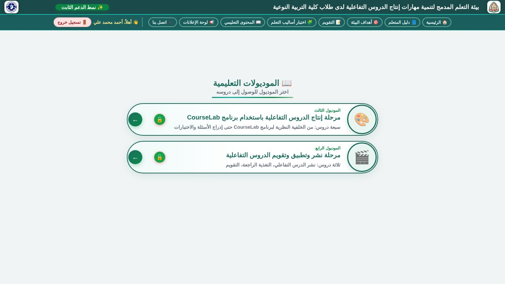
صفحة الموديولات التعليمية
تظهر لك على يمين الشاشة روابط دروس الموديول الثالث:
خلفية نظرية عن برنامج CourseLab
تحميل وتثبيت برنامج CourseLab وإنشاء درس جديد
تحرير الدرس التفاعلي باستخدام CourseLab
التعامل مع الكائنات في برنامج CourseLab
التعامل مع الكائنات المركبة في CourseLab
ضبط خصائص الكائنات في برنامج CourseLab
إدراج الأسئلة والاختبارات في الدرس التفاعلي
اضغط على الدرس فتظهر تحته ثلاثة روابط: 🎯 أهداف الدرس — 📄 محتوى الدرس — 🧩 النشاط التعليمي.
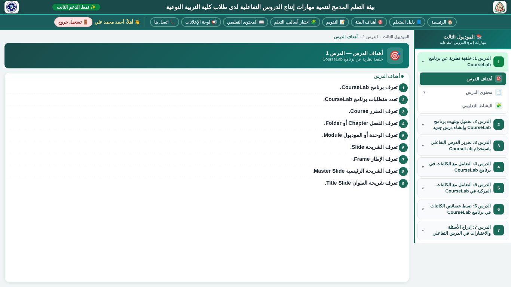
«أهداف الدرس»: ما ستتمكن منه بعد دراسة الدرس
بمجرد الضغط على «محتوى الدرس» تظهر أسفله قائمة منسدلة بأسماء مهارات الدرس (مثل: تحميل البرنامج — الوصول إلى الملف — خطوات التفعيل). اضغط على اسم المهارة فيظهر شرحها وبجواره الفيديو أو الصور الخاصة بها، والمهارة التي شاهدتها تتلوّن علامتها باللون الأخضر.
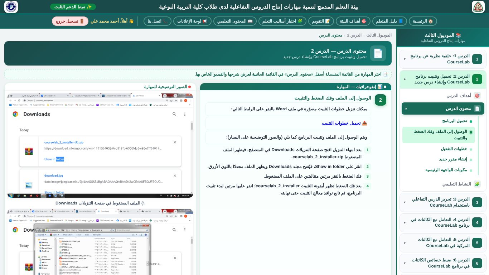
«محتوى الدرس»: قائمة المهارات المنسدلة، وشرح المهارة المختارة مع الفيديو الخاص بها
بعد آخر درس في الموديول الثالث يظهر لك رابط الانتقال إلى الموديول الرابع، وبنفس الطريقة تستعرض دروسه الثلاثة: نشر الدرس التفاعلي في برنامج CourseLab — التغذية الراجعة لمرحلة الإنتاج ومرحلة التنفيذ — مرحلة التقويم Evaluation.
🧩 لن يظهر النشاط لك إلا بعد أداء الجانب العملي الموجود في «محتوى الدرس»، وخلال النشاط ستحتاج للدعم، وسيكون ظاهرًا أمامك بصورة ثابتة، أو أن تطلبه من خلال الضغط على الزر لعرضه.
بعد دراسة محتوى الدرس اضغط على «🧩 النشاط التعليمي» في قائمة الدرس على اليمين.
يظهر أمامك وصف النشاط والمطلوب منك؛ نفّذه على برنامج CourseLab.
أثناء تنفيذ النشاط، إذا احتجت إلى دعم ستجده في لوحة الدعم على اليسار: ظاهرًا أمامك مباشرة (الدعم الثابت)، أو تطلبه بالضغط على زر «ابدأ الدعم» (الدعم المرن).
اكتب إجابتك في المساحة المخصصة أسفل النشاط، ثم اضغط «تسليم الإجابة». يمكنك تعديلها وإعادة تسليمها قبل الانتقال للدرس التالي.
النشاط التعليمي مع الدعم الثابت (يظهر على اليسار تلقائيًا)
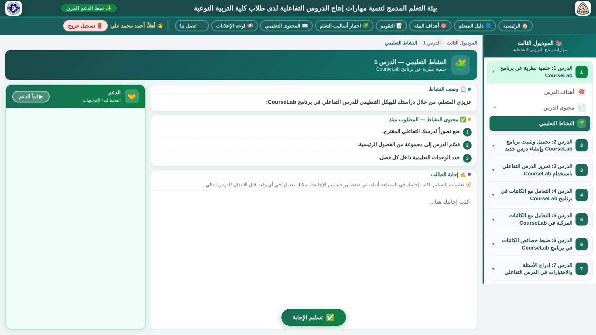
النشاط التعليمي مع الدعم المرن: زر «ابدأ الدعم» على اليسار
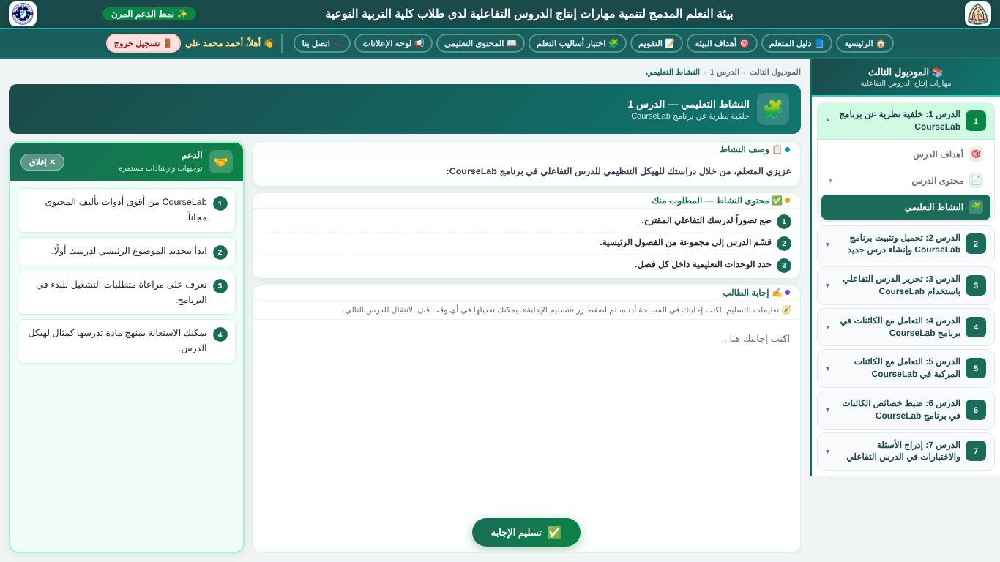
الدعم المرن بعد الضغط على «ابدأ الدعم»
اضغط على «📢 لوحة الإعلانات» لمتابعة آخر الأخبار والتعليمات المطلوبة والمواعيد المهمة.
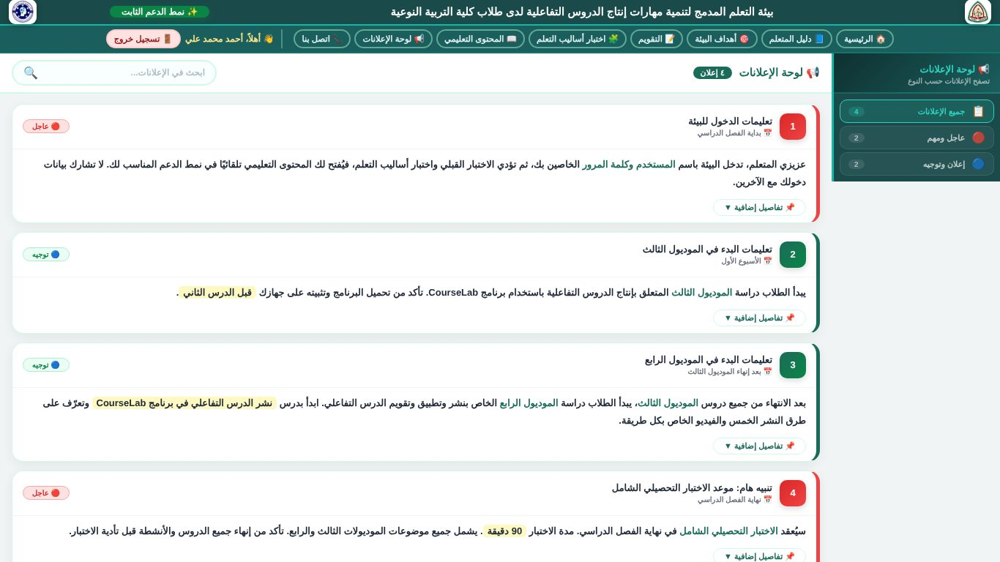
لوحة الإعلانات
للتواصل مع الباحثة اضغط على «📞 اتصل بنا»، واختر واتساب أو البريد الإلكتروني، واذكر اسمك واسم الدرس.
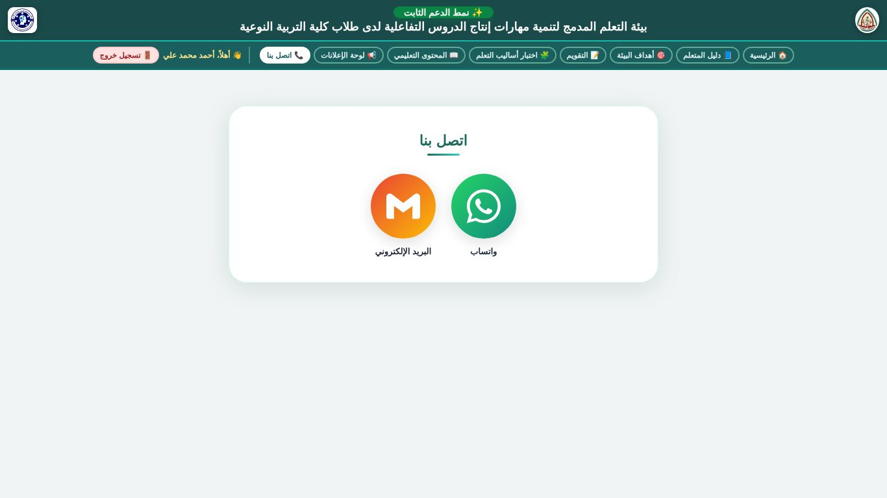
صفحة «اتصل بنا»
في نهاية دراستك لجميع الموديولات يظهر لك في نشاط آخر درس شريط (بانر) يوجّهك لأداء الاختبار البعدي، أو اضغط على نفس رابط «📝 التقويم» فيظهر لك الاختبار التحصيلي البعدي.
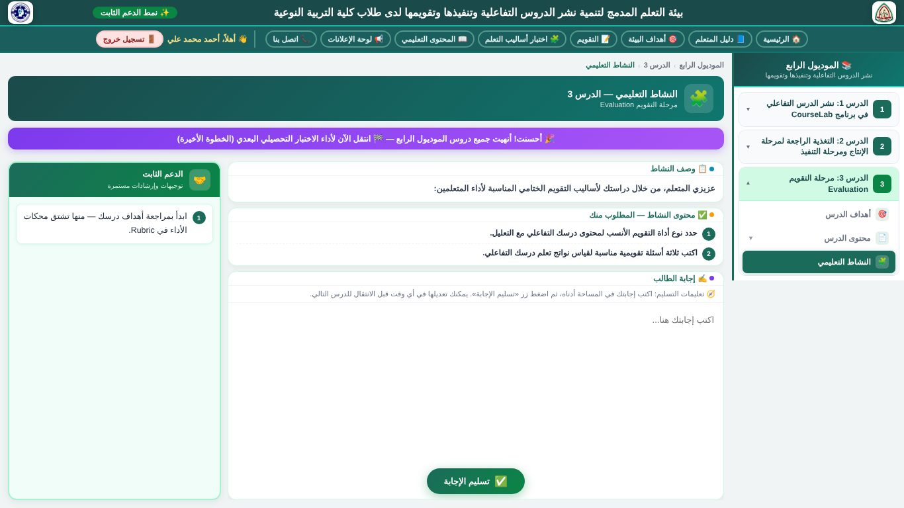
الشريط الذي يوجّهك للاختبار البعدي بعد آخر درس
اكتب كلمة مرور الاختبار البعدي التي تعلنها الباحثة في موعد الاختبار (اسمك يظهر تلقائيًا)، ثم اضغط «دخول». الاختبار بنفس مواصفات القبلي: 160 سؤالًا في 90 دقيقة.
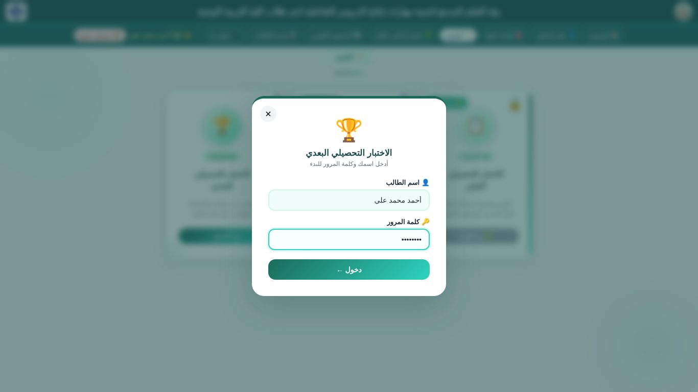
الدخول للاختبار البعدي
نتيجتك في الاختبار البعدي
ماذا تفعل؟
50% فأكثر
تكون قد اجتزت المحتوى المقدم بنجاح، وهذه هي الشاشة الأخيرة في البيئة؛ اقرأ نتيجتك ثم اضغط «إنهاء وتسجيل الخروج من البيئة».
أقل من 50%
تضغط «العودة لدراسة المحتوى التعليمي»، وتدرس محتوى الموديولات مرة أخرى، ثم تعيد الاختبار البعدي من رابط «التقويم».
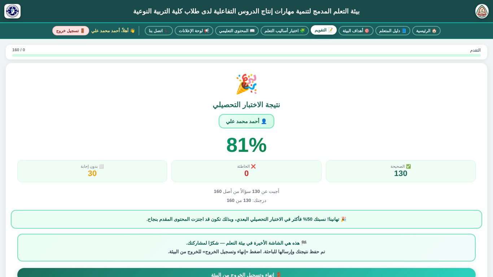
الشاشة الأخيرة: نتيجة الاختبار التحصيلي البعدي
للخروج في أي وقت اضغط زر «🚪 تسجيل خروج» أعلى الشاشة بجوار اسمك؛ يُحفظ تقدّمك وتكمل من نفس النقطة في الدخول التالي.
اضبط تكبير المتصفح على 100%، واستخدم أحدث إصدار من Google Chrome مع اتصال إنترنت مستقر.
ادرس الدروس بالترتيب: أهداف الدرس ← محتوى الدرس ← النشاط التعليمي، ونفّذ نشاط كل درس وسلّمه قبل الانتقال للدرس التالي.
شاهد فيديو كل مهارة كاملًا، وطبّق المهارة عمليًا على برنامج CourseLab.
أثناء أي اختبار: لا تغلق الصفحة ولا تغادرها؛ يمكنك فقط فتح «دليل المتعلم» في نافذة جديدة، وعند انتهاء الوقت يُسلَّم الاختبار تلقائيًا بالإجابات المسجلة.
تابع لوحة الإعلانات باستمرار؛ تنشر فيها الباحثة التذكيرات والمواعيد (مثل موعد تسليم الأنشطة وكلمة مرور الاختبار البعدي).
إذا واجهتك مشكلة تقنية: حدّث الصفحة (F5)، وتأكد من الإنترنت، ثم تواصل مع الباحثة من «اتصل بنا».